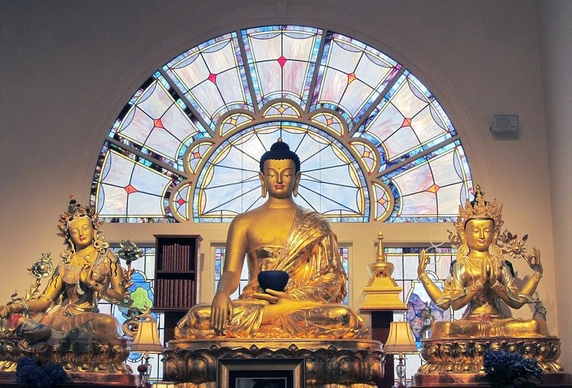
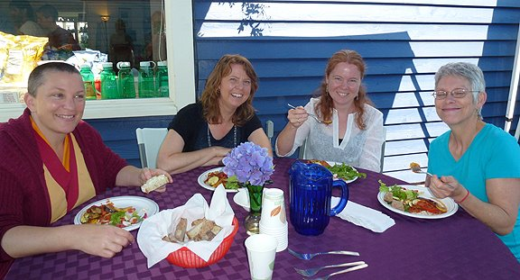

Kadampa Meditation Center is dedicated to world peace and considered a sanctuary in the city for many people in the Seattle area and around the Northwest.
The Temple is located in the charming Ballard community, just a short walk from Shilshole Bay with views of the Olympic Mountain range. Two adjoining houses provide room for 15 residents, both lay and ordained practitioners.
Upstairs the meditation room provides a beautiful shrine to focus our faith, serving as a continual reminder of the Buddhas presence. This remarkable room offers a peaceful and beautiful space for classes, workshops, group meditations, or individual contemplation.
Downstairs is a large community room and social area where people gather after classes and events to discuss teachings, get to know fellow students, meet the Teacher, and enjoy refreshments.
To learn more about KMC Washington, please visit meditateinseattle.org.
KMC Washington offers a unique opportunity for you to get away from your ordinary routine and spend time as a guest for private practice, weekend retreats, special events or simply to quiet your mind.
The Center is located in the charming Ballard community of Seattle, just a short walk from Shilshole Bay with views of the Olympic Mountain range. Two adjoining houses provide room for residents and guests to enjoy a quiet environment conducive to contemplation and meditation.
Comfy dorm beds or private rooms are available and offer guests the chance to rest and relax while focusing on their spiritual practice.
For more information or to make a reservation, call us or please email info@meditateinseattle.org
Within walking distance
1. Hotel Ballard
www.hotelballard.com
5214 Ballard Ave NW
Seattle
206-789-5012
5 star
2. Ballard Inn Seattle
www.ballardinnseattle.com
5300 Ballard Ave NW
Seattle
206-789-5011
4 star
3. Dibble House Bed & Breakfast
Thedibblehouse@msn.com
7301 Dibble Ave NW, Seattle
206-783-0320
3 miles away:
4. Watertown Hotel
www.watertownseattle.com
4242 Roosevelt Way NE
Seattle
206-826-4242
4 star